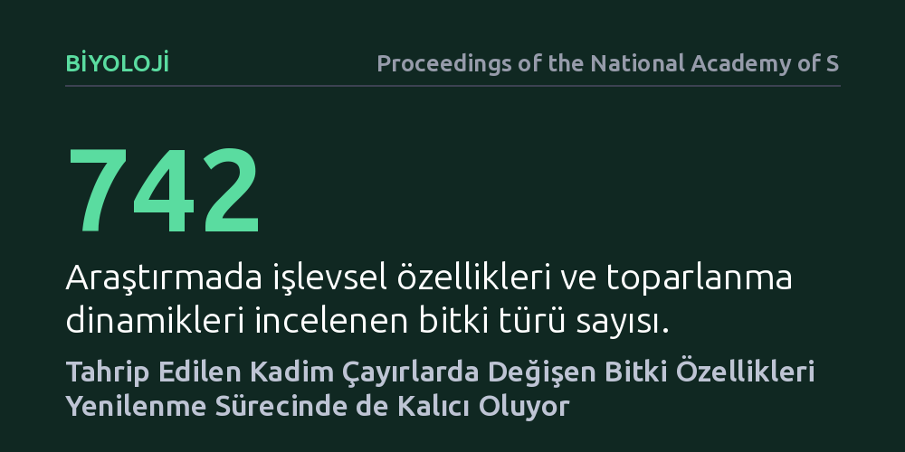

BIYOLOJI · Proceedings of the National Academy of Sciences · 2026-09-11
İnsan eliyle tahrip edilen kadim çayırların sonradan toparlanırken hangi bitki özelliklerini yitirdiği 742 türün verisiyle incelendi. Araştırma, tahribatın bitki boyu ve tohum yapısı gibi temel işlevsel özelliklerde yol açtığı sapmaların yenilenme sürecinde de kalıcı olduğunu gösterdi.
Bir çayırı kendi haline bırakmanın veya ağaçlandırmanın onu eski dengesine döndürmeye yetmediğini, ekosistemin özgün bitki karakterlerini kalıcı olarak yitirebildiğini gösterir.

Çayırlar ve savanlar genellikle sadece sıradan otlaklar gibi algılansa da, aslında yüzlerce yılda dengesini bulmuş 'kadim çayırlar' zengin bir yer altı kök ağına ve yüksek tür çeşitliliğine ev sahipliği yapar. Tarım, yapılaşma ve arazi açma gibi insan faaliyetleriyle bu alanlar tahrip edildiğinde küresel biyoçeşitlilik krizi daha da derinleşir. Ancak asıl çetrefilli mesele, bu araziler terk edilip kendi haline bırakıldığında ortaya çıkar.
Genel kanı, insan müdahalesi durduğunda doğanın zamanla eski haline döneceği yönündedir. Oysa yok edilen kadim bir çayır yeniden yeşillense dahi, geri gelen bitki topluluğu geçmiştekinin bir kopyası olmaz. Bilim insanları uzun süredir bazı türlerin bu alanlara rahatlıkla geri dönebilirken diğerlerinin neden kalıcı olarak saf dışı kaldığını ve ekosistemin işleyişinin nasıl değiştiğini anlamaya çalışıyordu.
Araştırmacılar bu sorunun cevabını bulmak için sadece türlerin varlığını listelemek yerine, bitkilerin hayatta kalma stratejilerini belirleyen 'işlevsel özelliklerine' odaklandı. Tohum boyutu, tohumun toprak altında bozulmadan kalabilme süresi, bitki boyu ve tohumların çevreye yayılma mesafesi gibi özellikler, bir bitkinin bozulmuş alanda tutunup tutunamayacağını doğrudan belirler.
Çalışmada, geçmişte insan eliyle bozulup toparlanmaya bırakılmış alanlar ile hiç bozulmamış doğal çayır alanlarından toplanan kapsamlı veri tabanları karşılaştırıldı. Toplam 742 bitki türünün morfolojik ve yaşamsal özellikleri istatistiksel modellerle taranarak, tahribatın ardından hangi özelliklerin elendiği ve hangilerinin baskın hale geldiği incelendi.
Elde edilen sonuçlar, çayır tahribatının bitki özelliklerinde derin ve kalıcı kaymalara yol açtığını gösterdi. Ağır tohumlu, yer altı kök sistemleri derin ve yayılma hızı yavaş olan kadim çayır türleri, alan terk edildikten on yıllar sonra bile geri dönmekte büyük güçlük çekiyor. Buna karşılık, küçük ve toprakta uzun süre canlı kalan tohumlara sahip, hızlı dağılan ve boy avantajı olan türler toparlanma alanlarında baskın kalmaya devam ediyor.
Bu durum, bitki örtüsü uzaktan bakıldığında yeşillenmiş ve görünüşte toparlanmış gibi dursa da, ekosistemin temel işlevsel dengesinin eski haline dönmediğini gösteriyor. Toprak sürümü veya arazi tahribatıyla başlayan süreç, bitkilerin tohum ve büyüme stratejilerini kalıcı biçimde değiştiriyor.
Bu bulgular, ekolojik restorasyon ve arazi yönetimi pratikleri açısından net bir gerçeğe işaret ediyor. Tahrip edilmiş kadim çayırların pasif toparlanmayla eski ekolojik işlevlerini kendiliğinden kazanmasını beklemek gerçekçi değildir. Çayır ekosistemlerini korumanın en kesin yolu, onları hiç bozmamaktır.
Ayrıca, bozulmuş arazileri yalnızca ağaçlandırarak ya da yeşillendirerek karbon tutma hedefi güden projelerin, çayırların özgün işlevsel çeşitliliğini canlandırmakta yetersiz kaldığı görülüyor. Gelecekteki koruma ve onarım çalışmalarının sadece tür sayısına değil, sistemin kaybettiği özgül bitki özelliklerini geri kazandırmaya odaklanması gerekiyor.